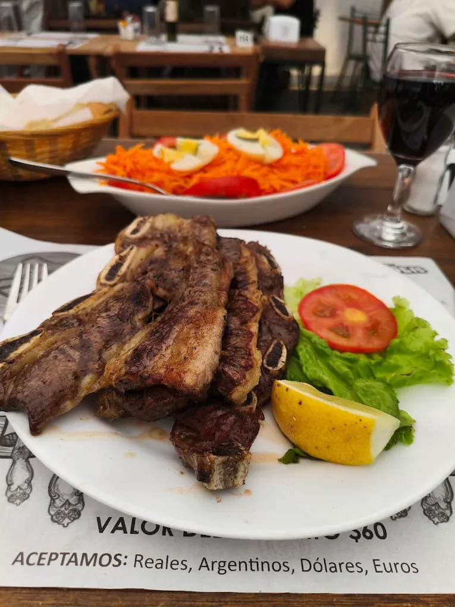

Discover Colonia’s UNESCO-listed Historic Quarter on foot with a professional guide, then sit down to an authentic Asado Experience (BBQ) at a local grill in the Historic Quarter with your host — premium cuts, local wine, and a relaxed atmosphere. No boat: the whole flow stays in the old town so you can focus on stories, architecture, and flavor in one seamless half-day.
Includes the BBQ menu for your group (Standard or Premium parrillero) and your choice of side dishes. Generally, the Standard BBQ is enough for about 2–3 people; Premium for about 4. Drinks and beverages are not included — you can order them on site.
Use Quantity under each order in the summary to set how many guests join the walk for that menu (the total updates automatically).
Pick the day you plan to come so we can coordinate availability in advance.
Choose walking tour language, Standard or Premium menu, then your side dishes and preferences (one order per BBQ menu).
After your reservation, a member of our support team will contact you to guide you through the details of your experience and answer any questions before your visit.
